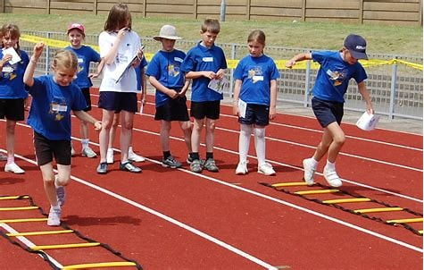
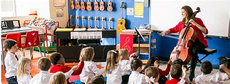
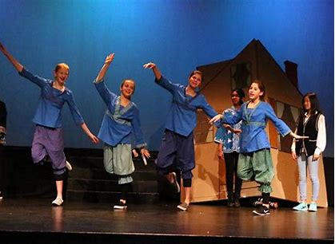
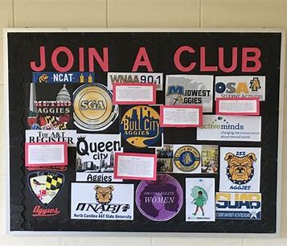

Extracurricular Activities
Kavya School offers a wide range of extracurricular activities (ECAs) designed to provide students with the opportunity to explore their interests, develop new skills, and have fun outside of the classroom.
Sports
We offer various sports activities, including basketball, soccer, cricket, and more. Students have the opportunity to participate in competitions and improve their physical fitness.Sports are physical activities involving skill, strategy, and competition. They promote fitness, teamwork, and social skills, with specific rules and values like sportsmanship. Popular sports include football, basketball, tennis, and more, contributing to physical health, entertainment, and community bonding worldwide.
Music & Arts
Our music and arts programs provide students with a creative outlet to express themselves through instruments, painting, drawing, and more. They can develop their artistic talents and perform in school events.Both music and art play vital roles in society, offering avenues for self-expression, communication, reflection, and cultural preservation. They stimulate emotions, inspire creativity, promote cultural diversity, and contribute to personal and collective well-being.
Drama & Theater
Students can explore their passion for acting and stagecraft in our drama and theater program. They have opportunities to participate in school plays and performances.Drama and theater are forms of performing arts that involve storytelling, live performances, and the exploration of human experiences. Drama encompasses the composition of plays, while theater includes the physical spaces and technical aspects of staging performances. Both contribute to cultural expression, entertainment, and the portrayal of diverse narratives and emotions.
Clubs & Societies
We offer a variety of clubs and societies for students to join, such as debate club, chess club, and environmental club. These provide opportunities for students to engage in intellectual and community-building activities.Clubs and societies are groups of people who come together based on shared interests or goals. Clubs are usually smaller and focus on specific hobbies or activities, while societies are larger and often centered around professional, academic, or cultural interests. Both provide opportunities for networking, learning, socializing, and collaboration within their respective communities.